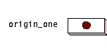
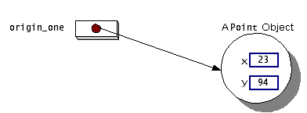
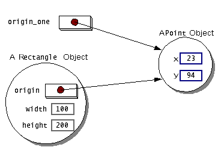

Feedback Form
|
|
Start of Tutorial > Start of Trail > Start of Lesson |
Search
Feedback Form |
As you know, a class provides the blueprint for objects; you create an object from a class. Each of the following statements taken from theCreateObjectDemoprogram creates an object:
The first line creates an object from thePoint origin_one = new Point(23, 94); Rectangle rect_one = new Rectangle(origin_one, 100, 200); Rectangle rect_two = new Rectangle(50, 100);PointRectangleEach statement has three parts:
The next three subsections discuss each of these actions in detail:
- Declaration: The code set in red in the previous listing are all variable declarations that associate a name with a type. When you create an object, you do not have to declare a variable to refer to it. However, a variable declaration often appears on the same line as the code to create an object.
- Instantiation:
newis a Java operator that creates the new object (allocates space for it).- Initialization: The
newoperator is followed by a call to a constructor. For example,Point(23, 94)is a call toPoint's only constructor. The constructor initializes the new object.
From the Variablessection in the previous lesson, you learned that to declare a variable, you write:
This notifies the compiler that you will use name to refer to data whose type is type.type nameIn addition to the primitive types, such as
intandboolean, provided directly by the Java platform, classes and interfaces are also types. So to declare a variable to refer to an object, you can use the name of a class or an interface, as the variable's type. The sample program uses both thePointand theRectangleclass names as types to declare variables.Declarations do not create new objects. The codePoint origin_one = new Point(23, 94); Rectangle rect_one = new Rectangle(origin_one, 100, 200); Rectangle rect_two = new Rectangle(50, 100);Point origin_onedoes not create a newPoint object; it just declares a variable, namedorigin_one, that will be used to refer to aPointobject. The reference is empty until assigned, as illustrated in the next figure. An empty reference is known as a null reference. To create an object you must instantiate it with thenewoperator.
Thenewoperator instantiates a class by allocating memory for a new object. Thenewoperator requires a single, postfix argument: a call to a constructor. The name of the constructor provides the name of the class to instantiate. The constructor initializes the new object.The
newoperator returns a reference to the object it created. Often, this reference is assigned to a variable of the appropriate type. If the reference is not assigned to a variable, the object is unreachable after the statement in which thenewoperator appears finishes executing.Initializing an Object
Here's the code for thePointclass:This class contains a single constructor. You can recognize a constructor because it has the same name as the class and has no return type. The constructor in thepublic class Point { public int x = 0; public int y = 0; //A constructor! public Point(int x, int y) { this.x = x; this.y = y; } }Pointclass takes two integer arguments, as declared by the code(int x, int y). The following statement provides 23 and 94 as values for those arguments:The effect of the previous line of code can be illustrated in the next figure:Point origin_one = new Point(23, 94); Here's the code for theRectangleclass, which contains four constructors:Each constructor lets you provide initial values for different aspects of the rectangle: the origin; the width, and the height; all three; or none. If a class has multiple constructors, they all have the same name but a different number of arguments or different typed arguments. The Java platform differentiates the constructors, based on the number and the type of the arguments. When the Java platform encounters the following code, it knows to call the constructor in thepublic class Rectangle { public int width = 0; public int height = 0; public Point origin; //Four constructors public Rectangle() { origin = new Point(0, 0); } public Rectangle(Point p) { origin = p; } public Rectangle(int w, int h) { this(new Point(0, 0), w, h); } public Rectangle(Point p, int w, int h) { origin = p; width = w; height = h; } //A method for moving the rectangle public void move(int x, int y) { origin.x = x; origin.y = y; } //A method for computing the area of the rectangle public int area() { return width * height; } }Rectangleclass that requires a Point argument followed by two integer arguments:This call initializes the rectangle'sRectangle rect_one = new Rectangle(origin_one, 100, 200);originvariable to thePointobject referred to byorigin_one. The code also setswidthto 100 andheightto 200. Now there are two references to the samePointobject; an object can have multiple references to it, as shown in the next figure: Multiple references can refer to the same object. The following line of code calls the constructor that requires two integer arguments, which provide the initial values forwidthandheight. If you inspect the code within the constructor, you will see that it creates a newPointobject whosexandyvalues are initialized to 0:TheRectangle rect_two = new Rectangle(50, 100);Rectangleconstructor used in the following statement doesn't take any arguments, so it's called a no-argument constructor:If a class does not explicitly declare any constructors, the Java platform automatically provides a no-argument constructor, called the default constructor, that does nothing. Thus, all classes have at least one constructor.Rectangle rect = new Rectangle();
This section talked about how to use a constructor.
Providing Constructors for Your Classes explains how to write constructors for your classes.
explains how to write constructors for your classes.

|
|
Start of Tutorial > Start of Trail > Start of Lesson |
Search
Feedback Form |
Copyright 1995-2004 Sun Microsystems, Inc. All rights reserved.